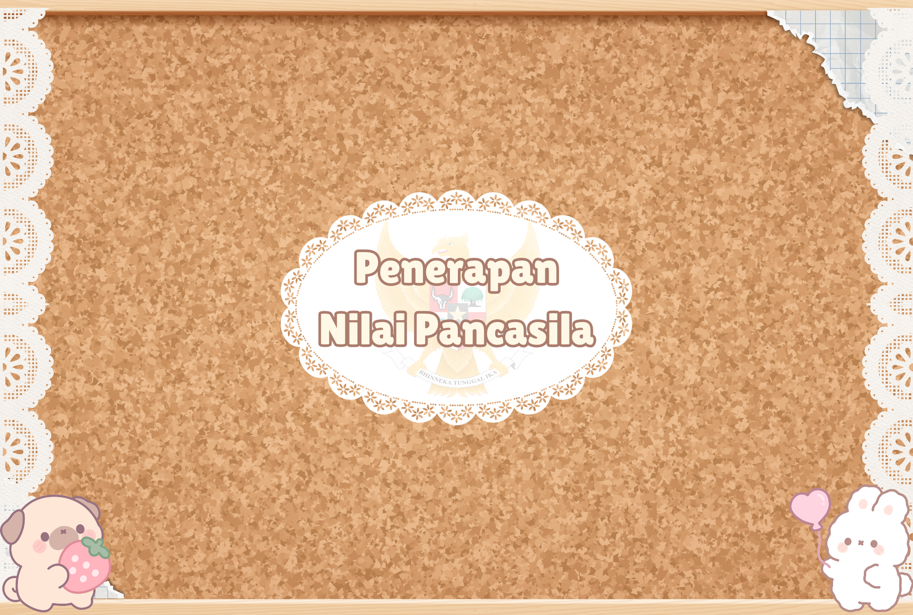
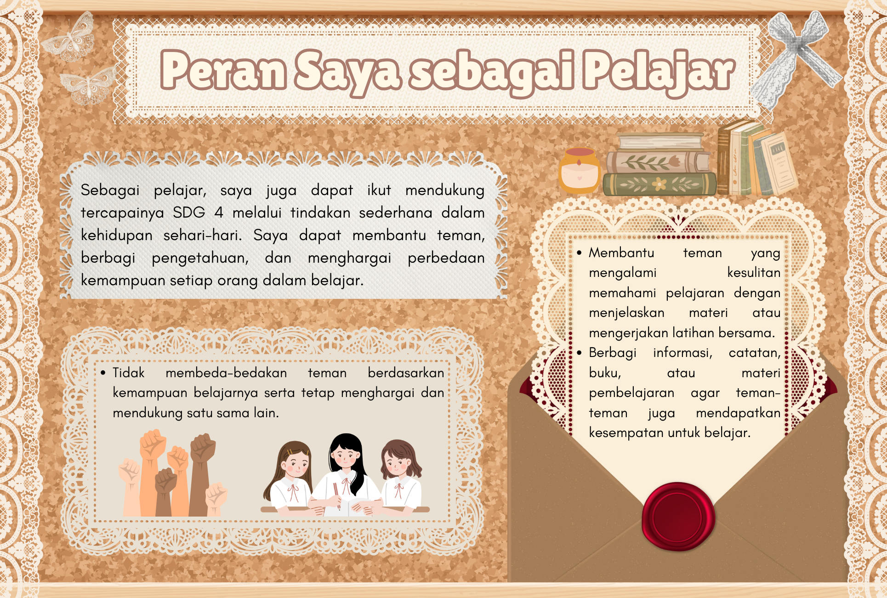

.png)

Sila ke-2 mengajarkan kita untuk menghargai hak setiap orang, menunjukkan kepedulian terhadap sesama, dan memberikan kesempatan pendidikan tanpa membeda-bedakan latar belakang.
Hal ini berkaitan dengan SDG 4 karena setiap anak berhak memperoleh pendidikan yang berkualitas dan kesempatan belajar yang sama.

Sila ke-3 mengajarkan pentingnya persatuan, kebersamaan, toleransi, dan gotong royong meskipun terdapat berbagai perbedaan.
Hal ini berkaitan dengan SDG 4 karena pendidikan mengajarkan kita untuk saling menghargai perbedaan dan bekerja sama agar semua orang dapat belajar dengan baik.

Kerja sama antarnegara harus didasarkan pada rasa kepedulian dan menghargai hak setiap manusia. Dalam bidang pendidikan, hal ini dapat dilakukan dengan membantu masyarakat yang masih kekurangan fasilitas dan kesempatan belajar.
Setiap negara perlu bekerja sama dan saling mendukung untuk mencapai tujuan bersama. Negara-negara dapat berbagi pengetahuan, teknologi, tenaga ahli, dan bantuan untuk meningkatkan kualitas pendidikan.
Setiap negara memiliki budaya, bahasa, agama, dan kebiasaan yang berbeda. Oleh karena itu, kerja sama harus dilakukan dengan saling menghormati perbedaan serta mendengarkan pandangan dari negara lain.
Jika terdapat perbedaan pendapat atau kepentingan antarnegara, setiap pihak perlu diberikan kesempatan untuk menyampaikan pendapatnya. Keputusan bersama harus mempertimbangkan kebutuhan semua pihak.
Bantuan dan kesempatan pendidikan harus diberikan sesuai kebutuhan masing-masing negara atau masyarakat. Contohnya, pemerataan fasilitas sekolah, buku, teknologi pembelajaran, dan pelatihan guru.

